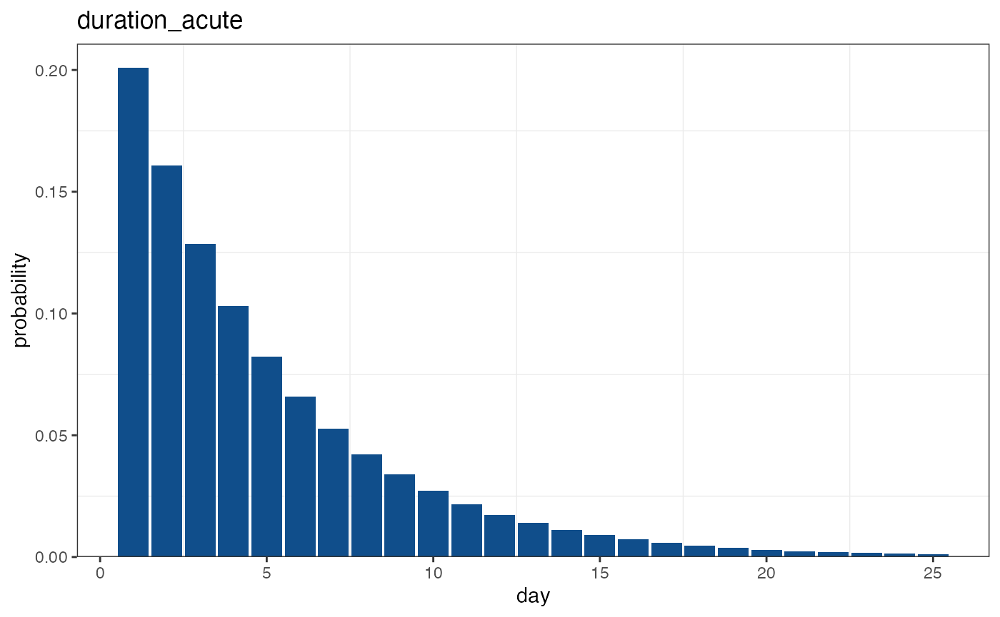
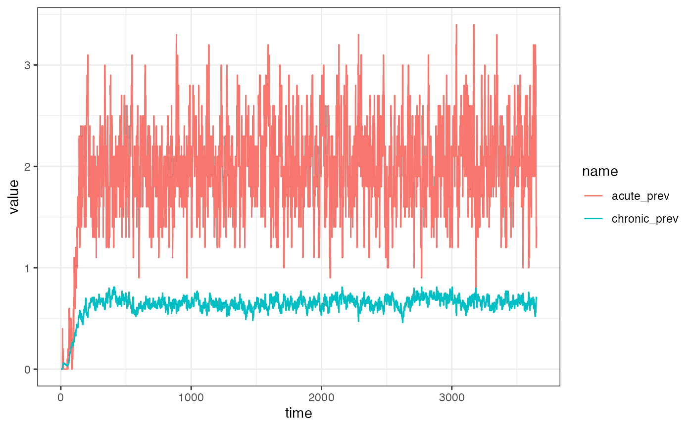
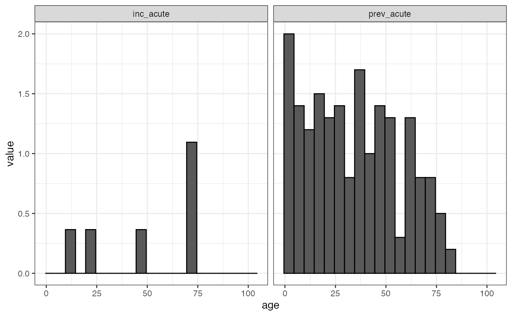

Getting started: simulating epidemiological data
Source:vignettes/getting_started.Rmd
getting_started.RmdThis tutorial goes through the basic process of creating a SIMPLEGEN project and running the inbuilt epidemiological simulator.
Setting up the model
SIMPLEGEN works with projects, which are essentially just glorified lists that hold all inputs and outputs in a single convenient place. We start by creating a new project and specifying the parameters of the epidemiological model:
myproj <- simplegen_project()
myproj <- define_epi_model_parameters(myproj,
H = 1e3,
M = 1e4)Alternatively, if you are familiar with the pipe operator %>% from the dplyr package then you can use this to chain together multiple commands:
library(dplyr)
#>
#> Attaching package: 'dplyr'
#> The following objects are masked from 'package:stats':
#>
#> filter, lag
#> The following objects are masked from 'package:base':
#>
#> intersect, setdiff, setequal, union
myproj <- simplegen_project() %>%
define_epi_model_parameters(H = 1e3,
M = 5e4)Here we’ve just specified the human and mosquito population sizes and left all other parameters with their default values. A complete list of model parameters and their defaults can be found in the help for this function (see ?define_epi_model_parameters).
Taking a quick look at our project we get e a summary of the current setup:
myproj
#> Epidemiological model:
#> demes: 1
#> H: 1000
#> M: 50000
#> seed infections: 100
#> We can use our inbuilt plotting functions to explore some of the assumed distributions of our model. For example, we can look at the distribution of time spent in the acute state:
plot_epi_distribution(myproj, name = "duration_acute")
Many distributions can be explored in this way, and ?plot_epi_distribution gives a complete list.
Once we’re happy with the parameters of the model, the next step is to define the outputs that we expect it to produce. There are three possible types of output:
-
dailyoutput contains values for each day of simulation. This can be useful for visualising trends over time. -
sweepsare the same asdailyoutput, but evaluated at specific points in time. This can be useful for getting a more detailed snap-shot of the population without overloading the daily output. For example, we might want to return the prevalence in 5-year age bands on day 100, but without returning these values every other day of the simulation. -
surveysrepresent samples taken from the population according to a predefined sampling strategy. Surveys are the most important type of output from the genetic perspective, as genetic data will only be generated from individuals in the survey.
We specify daily outputs using a basic dataframe. Table 1 gives the columns of this dataframe along with all possible combinations of values (Table 1 should be read from left to right, moving into any box not separated by a horizontal line - for example, state = "A", measure = "count" is a viable combination, but state = "A", measure = "EIR" is not).

Any number of extra columns can be added to this basic dataframe, for example it can be useful to have a name column giving a short description of what each row contains. We can use any standard method to produce this dataframe; the code below uses the rbind() method:
daily_dataframe <- rbind(data.frame(name = "acute_prev", deme = 1, state = "A", measure = "prevalence", diagnostic = "microscopy", age_min = 0, age_max = 5),
data.frame(name = "chronic_prev", deme = 1, state = "C", measure = "prevalence", diagnostic = "microscopy", age_min = 0, age_max = 5),
data.frame(name = "acute_inc", deme = 1, state = "A", measure = "incidence", diagnostic = "PCR", age_min = 2, age_max = 10),
make.row.names = FALSE)
print(daily_dataframe)
#> name deme state measure diagnostic age_min age_max
#> 1 acute_prev 1 A prevalence microscopy 0 5
#> 2 chronic_prev 1 C prevalence microscopy 0 5
#> 3 acute_inc 1 A incidence PCR 2 10Once we’re happy with this dataframe we can load it into the project using define_epi_sampling_parameters(). At this point any errors in the format will be flagged.
myproj <- define_epi_sampling_parameters(project = myproj,
daily = daily_dataframe)The second type of output is sweeps. These can be defined using a second dataframe identical in format to the daily output but with an added time column. For example, the following code specifies that we want to output acute prevalence and acute incidence in 5-year age bands at day 365:
sweep_dataframe <- rbind(data.frame(name = "prev_acute", time = 365, deme = 1, measure = "prevalence", state = "A", diagnostic = "true", age_min = seq(0, 100, 5), age_max = seq(0, 100, 5) + 4),
data.frame(name = "inc_acute", time = 365, deme = 1, measure = "incidence", state = "A", diagnostic = "true", age_min = seq(0, 100, 5), age_max = seq(0, 100, 5) + 4),
make.row.names = FALSE)
print(head(sweep_dataframe))
#> name time deme measure state diagnostic age_min age_max
#> 1 prev_acute 365 1 prevalence A true 0 4
#> 2 prev_acute 365 1 prevalence A true 5 9
#> 3 prev_acute 365 1 prevalence A true 10 14
#> 4 prev_acute 365 1 prevalence A true 15 19
#> 5 prev_acute 365 1 prevalence A true 20 24
#> 6 prev_acute 365 1 prevalence A true 25 29Again, this needs to be loaded into the project:
myproj <- define_epi_sampling_parameters(project = myproj,
daily = daily_dataframe,
sweeps = sweep_dataframe)The final type of output is surveys, but these mainly relate to genetic data and so will be explored in a later vignette.
Running the simulation
Once we have specified our model parameters and outputs we are ready to run the simulation. This is done using the sim_epi() function. Note that the argument pb_markdown = TRUE is used here just to avoid cluttering this tutorial with too much output, but you should run without this argument. In the example below we run the simulation for 10 years of output:
myproj <- sim_epi(myproj,
max_time = 3650,
pb_markdown = TRUE)
#> Running simulation
#>
|
|======================================================================| 100%
#>
#> completed in 1.473755 secondsTaking a quick look at the project we can now see that we have some output:
myproj
#> Epidemiological model:
#> demes: 1
#> H: 1000
#> M: 50000
#> seed infections: 100
#>
#> Sampling strategy:
#> daily outputs: 3
#> sweep timepoints: 1
#> survey outputs: 0
#>
#> Output:
#> simulation days: 3650All output from the epidemiological model is stored within the epi_outputs element of the project. For example, we can look at the first few daily output values:
head(myproj$epi_output$daily)
#> time name deme state measure diagnostic age_min age_max value
#> 1 1 acute_prev 1 A prevalence microscopy 0 5 0
#> 2 1 chronic_prev 1 C prevalence microscopy 0 5 0
#> 3 1 acute_inc 1 A incidence PCR 2 10 0
#> 4 2 acute_prev 1 A prevalence microscopy 0 5 0
#> 5 2 chronic_prev 1 C prevalence microscopy 0 5 0
#> 6 2 acute_inc 1 A incidence PCR 2 10 0Notice that the format of this dataframe is identical to the daily dataframe we loaded in, but now replicated over all time points and with an added value column. We see a very similar thing when we look at the sweep output:
head(myproj$epi_output$sweeps)
#> name time deme measure state diagnostic age_min age_max value
#> 1 prev_acute 365 1 prevalence A true 0 4 0.1777778
#> 2 prev_acute 365 1 prevalence A true 5 9 0.1976744
#> 3 prev_acute 365 1 prevalence A true 10 14 0.1587302
#> 4 prev_acute 365 1 prevalence A true 15 19 0.1931818
#> 5 prev_acute 365 1 prevalence A true 20 24 0.2328767
#> 6 prev_acute 365 1 prevalence A true 25 29 0.2063492Having outputs in long format like this makes it easy to plot and summarize results, as will be seen below.
Plotting and summarizing results
Having outputs in long format makes it straightforward to plot and summarize results - especially if we make use of fantastic packages like dplyr and ggplot2.
For example, the following code filters our daily output to prevalence measures only and then produces a basic line plot of prevalence over time:
library(ggplot2)
myproj$epi_output$daily %>%
dplyr::filter(measure == "prevalence") %>%
ggplot(aes(x = time, y = value)) + theme_bw() +
geom_line(aes(color = name))
We can see that prevalence increased initally, then reached a stable level after a period of time.
Similarly, we can produce simple plots of our sweep output:
myproj$epi_output$sweeps %>%
dplyr::mutate(age_mid = (age_min + age_max) / 2,
age_width = age_max - age_min + 1) %>%
ggplot() + theme_bw() +
geom_bar(aes(x = age_mid, y = value, width = age_width), color = "black", stat = "identity") +
xlab("age") +
facet_wrap(~name)
#> Warning: Ignoring unknown aesthetics: width
#> Warning: Removed 6 rows containing missing values (position_stack).